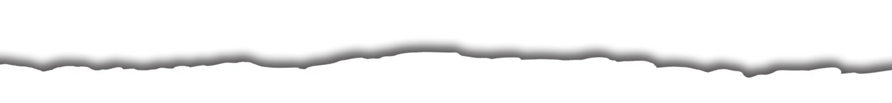

Mendoza Inspira
A pleno sol, te invita en verano a disfrutar del enoturismo, la aventura, la Vendimia y mucho más. Es tiempo de animarse, de conectarse con la naturaleza, pero sobre todo es tiempo de celebrar. Ustedes vengan, que nosotros ponemos el vino. Chin Chin Mendoza.
Lujan de Cuyo
El suelo, de origen aluvional, está constituido por un subsuelo pedregoso donde sedimentan arena, limo y arcilla. Ese suelo es pobre en materia orgánica, limitando el crecimiento excesivo de las vides, por lo que resultan excelentes para la producción de vinos de calidad. Esta conjunción de factores resulta sin dudas en un Malbec de características sobresalientes: A la vista el vino producido con uvas Malbec presenta su clásico color rojo violáceo, de alta intensidad.
En nariz, los Marbec de Luján de Cuyo, presentan notas frutales, mayormente a ciruela madura o confitura de ciruela. También aparecen notas especiadas, pimienta negra y una expresión mineral. En boca el vino se presenta generalmente voluminoso, sin aristas, con taninos dulces y sedosos. Este tour guiado visita 3 Bodegas mendocinas.
Bodegas de Luján de Cuyo
Catena Zapata, Achaval Ferrer, Belasco de Baquedano, Bodega Vistalba, Casarena, Pulenta Estate, Dominios del Plata, Melipal, Renacer, Septima, Finca de Cero, Bressia, Kaiken, Fabre, Altavista, Nieto Senetiner, Luiggi Bosca, Chandon, Terrazas de Los Andes, Norton, Lagarde, CarmeloPaty, Viña Cobos, Ruca Malen.
Tour Privado Lujan de Cuyo
Nuestro guía lo acompañará por tres bodegas premium, antiguas y modernas, de alta tecnología y pintorescas, con un espectacular telón de fondo de montañas cubiertas de nieve. Primero te llevamos a Matervini , el nuevo proyecto de Santiago Achaval que explora las diversas geologías de la precordillera obteniendo una variedad de vinos con personalidad única. A continuación, tenemos una visita y degustación en Terrazas , una bodega de estilo antiguo completamente renovada y reformada por Chandon. Aquí el enfoque está en la elaboración de Malbec grandes y concentrados de un solo viñedo. A continuación tenemos un menú degustación que te llevamos a Lagarde ;Esta histórica bodega de la familia Pescarmona. Aquí disfrutamos de un maridaje de comida y vino con varios platos, incluido el mejor vino Henry, entre otros.


Maipu
Maipú es reconocida internacionalmente por sus establecimientos olivícolas y vitivinícolas de altísima calidad y de mayor producción del país. Ofrece múltiples actividades para todo el visitante como conocer museos, visitas bodegas y viñedos.
Maipú posee un clima árido y seco, pero con tendencia a cálido. Se han registrado temperaturas máximas de casi 43°C y mínimas de -10°C. Predominan vientos del Sudoeste, Oeste y el Zonda. Las condiciones climáticas son impecables para obtener una muy buena cosecha de vinos y olivas. En cuanto a las lluvias, oscilan los 210 mm. anuales. Maipú tiene un clima templado árido con tendencia a cálido.
Bodegas de Maipú
Familia Zuccardi , Trapiche , Carinae , El Enemigo, Finca Flichman, Domiciano, Vistandes, Bodegas Lopez, Trivento, Tempus Alba, Mevi, Ruttini.
Tour Privado Maipu
Este wine tour por la región de Maipú visita tres bodegas diferentes en estructura, paisajes y arquitectura, una combinación perfecta ! Vinos de alta calidad dan el marco perfecto a este paseo.

Valle de Uco
El Valle de Uco es la región de turismo de vinos más joven de la provincia de Mendoza. Allí se emplazan bodegas de imponente arquitectura y diseño, siendo casi todas ellas modernas y equipadas con la última tecnología.La zona cuenta con un entorno natural impactante ya que se encuentra rodeada por el majestuoso Cordón del Plata (Cordillera de los Andes).La combinación de la gran altura, los suelos , la irrigación, más de 250 días soleados al año y una importante amplitud térmica generan una excelente maduración y una gran concentración de las propiedades en las distintas uvas.Por este motivo los vinos que se obtienen son muy diferentes y se caracterizan por poseer colores muy profundos, aromas intensos y texturas importantes.
Bodegas del Valle de Uco
Salentein, The Vines Of Mendoza, O.Fournier, Clos de Los 7, Gimenez Rilly, Domaine Bousquet, Andeluna, Azul, Atamisque, Sophenia.
Tour Privado Valle de Uco
Las montañas y los bellos paisajes del Valle de Uco preparan nuestros sentidos para experimentar los aromas y sabores de estos vinos de altitud (aquí están localizados algunos de los viñedos más altos del mundo). Rodeado por un paisaje impresionante del volcán Tupungato y la Cordillera, usted apreciará el prestigio de estas bodegas y sus magnificos productos, finalizando con un almuerzo gourmet inigualable en Andeluna.